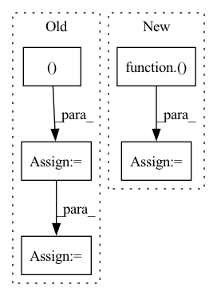

Pattern ID :30150
Before Change
//正解ラベル、偽ラベルを作成
//epochの最後のイテレーションはミニバッチの数が少なくなる
mini_batch_size = imgs.size()[0]
label_real = torch.full((mini_batch_size = criterion(d_out_fake.view(-1),label_real)
//誤差を伝搬
g_optimizer.zero_grad()
d_optimizer.zero_grad()After Change
// d_loss_real = criterion(d_out_real.view(-1),label_real)
// d_loss_fake = criterion(d_out_fake.view(-1),label_fake)
d_loss_real = torch.nn.ReLU()(1.0-d_out_real).mean()
d_loss_fake = torch.nn.ReLU()( 1.0+d_out_fake) .mean()
d_loss = d_loss_real + d_loss_fake
//誤差を伝搬
g_optimizer.zero_grad()In pattern: SUPERPATTERN
Frequency: 5
Non-data size: 5
Instances Fragment ID: 89384978
Project Name: zassou65535/image_generator
Commit Name: 0d1f9d59248bbe59037827d4a2f017e6c6b20344
Time: 2020-02-06
Author: nakamura.k.bv@m.titech.ac.jp
File Name: GAN.py
M Class Name: AnonimousClass
N Class Name: AnonimousClass
M Method Name: train_model(4)
N Method Name: train_model(4)
M Parent Class:
N Parent Class:
M File Name: GAN.py
N File Name: GAN.py
M Start Line: 31
M End Line: 108
N Start Line: 83
N End Line: 111
Before Change
gates = P.matmul(input, self.weight_ih)
if self.bias_ih is not None:
gates += self.bias_ih
self.weight_hh = self.transpose(self.weight_hh, (1, 0 ))
gates += P.matmul(h, self.weight_hh)
if self.bias_hh is not None:
gates += self.bias_hh
After Change
gates = P.MatMul(False, True)(input, self.weight_ih)
if self.bias_ih is not None:
gates += self.bias_ih
gates += P.MatMul(False, True)( h, self.weight_hh)
if self.bias_hh is not None:
gates += self.bias_hh
gate_slices = self.split(gates) Fragment ID: 89385010
Project Name: tensorlayer/tensorlayerx
Commit Name: 0790054c0630c92a4f2d0119db5d4149510cff25
Time: 2022-03-03
Author: jiaronghan@outlook.com
File Name: tensorlayerx/backend/ops/mindspore_nn.py
M Class Name: lstmcell
N Class Name: lstmcell
M Method Name: construct(4)
N Method Name: construct(4)
M Parent Class: Cell
N Parent Class: Cell
M File Name: tensorlayerx/backend/ops/mindspore_nn.py
N File Name: tensorlayerx/backend/ops/mindspore_nn.py
M Start Line: 1871
M End Line: 1876
N Start Line: 1872
N End Line: 1875
Before Change
input_img = cv2.cvtColor(image, cv2.COLOR_BGR2RGB)
// Resize input image
input_img = cv2.resize(input_img, (input_width, input_height ))
// Scale input pixel values to 0 to 1
input_img = input_img / 255.0
input_img = input_img.transpose(2, 0, 1)
input_tensor = input_img[np.newaxis, :, :, :].astype(np.float32)
After Change
from ultralytics.yolo.data.augment import LetterBox
def prepare_input(image, input_shape, stride, pt):
input_tensor = LetterBox(input_shape, auto=pt, stride=stride)(image=image)
input_tensor = input_tensor.transpose((2, 0, 1))[::-1] // HWC to CHW, BGR to RGB
input_tensor = np.ascontiguousarray(input_tensor).astype(np.float32) // contiguous
input_tensor /= 255.0 // 0 - 255 to 0.0 - 1.0
input_tensor = input_tensor[None].astype(np.float32)
return input_tensor
Fragment ID: 89385009
Project Name: augmentedstartups/as-one
Commit Name: 37de4fbaee82f479c5ca8d53a2450c7083056ef1
Time: 2023-01-16
Author: umair.imran@axcelerate.ai
File Name: asone/detectors/yolov8/utils/yolov8_utils.py
M Class Name: AnonimousClass
N Class Name: AnonimousClass
M Method Name: prepare_input(4)
N Method Name: prepare_input(2)
M Parent Class:
N Parent Class:
M File Name: asone/detectors/yolov8/utils/yolov8_utils.py
N File Name: asone/detectors/yolov8/utils/yolov8_utils.py
M Start Line: 7
M End Line: 15
N Start Line: 7
N End Line: 12
Before Change
@nn.compact
def __call__(self, x):
x = x.reshape((x.shape[0], -1 )) // flatten
for _ in range(2):
x = nn.Dense(features=100)(x)
x = nn.relu(x)
x = nn.Dense(features=10)(x)
return xAfter Change
def __call__(self, x):
for sz in self.hidden_sizes:
x = nn.relu(nn.Dense(sz)(x))
x = nn.Dense(self.output_size)( x)
return x
def cross_entropy_loss(*, logits, labels): Fragment ID: 89384983
Project Name: google/uncertainty-baselines
Commit Name: cb581a303749fa4e7f1a19422109627b3a6d61ea
Time: 2022-08-13
Author: no-reply@google.com
File Name: experimental/shoshin/training.py
M Class Name: MLP
N Class Name: MLP
M Method Name: __call__(2)
N Method Name: __call__(2)
M Parent Class: nn.Module
N Parent Class: nn.Module
M File Name: experimental/shoshin/training.py
N File Name: experimental/shoshin/training.py
M Start Line: 39
M End Line: 43
N Start Line: 42
N End Line: 44
Before Change
def body_ctx(ctx: Context, src: jnp.ndarray) -> typing.Union[typing.Tuple[jnp.ndarray, jnp.ndarray], jnp.ndarray]:
src = input_embed(ctx, src)
zero = jnp.zeros_like(src)
src = (ctx.parameters, src, zero, src, zero )
for i in range(ctx.dims.depth):
src = reversible(ctx, pointwise_block, src)
src = reversible(ctx, bottleneck_block, src)
src = reversible(ctx, pointwise_block, src)
if i % ctx.model.qrnn_frequency == (ctx.model.qrnn_frequency // 2 - 1):
src = reversible(ctx, qrnn_block, src)
out = revnet_out(src[1:])After Change
src = (src, zero, src, zero)
if ctx.is_initializing:
ctx.add_depth = True
ctx.parameters = step(ctx)( src, ({}, 0))
ctx.add_depth = False
else:
src, _ = step(ctx)(src, ({}, 0))
out = revnet_out(src) Fragment ID: 89384991
Project Name: homebrewnlp/homebrewnlp-jax
Commit Name: 457dca1ca35d447a12a1e2ede9ac2e19b93c20a1
Time: 2022-08-28
Author: 39779310+ClashLuke@users.noreply.github.com
File Name: src/model/main.py
M Class Name: AnonimousClass
N Class Name: AnonimousClass
M Method Name: body_ctx(2)
N Method Name: body_ctx(2)
M Parent Class:
N Parent Class:
M File Name: src/model/main.py
N File Name: src/model/main.py
M Start Line: 27
M End Line: 36
N Start Line: 55
N End Line: 64